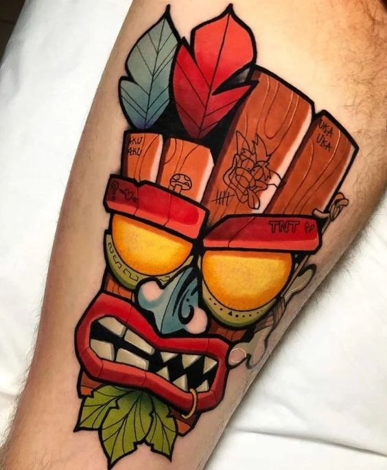
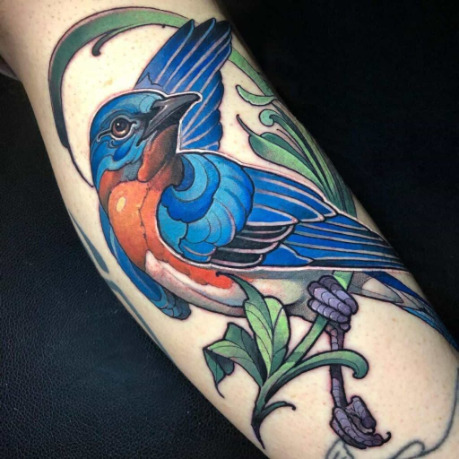
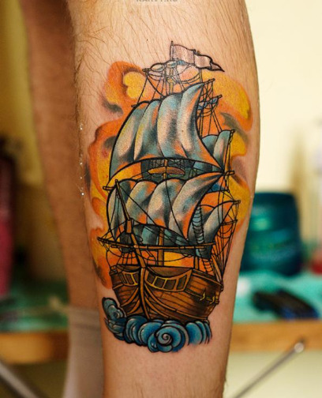
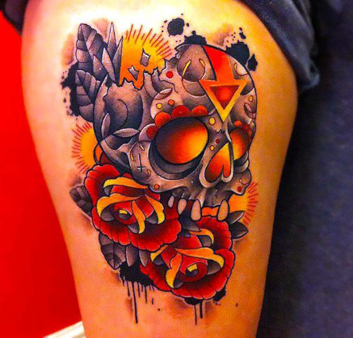
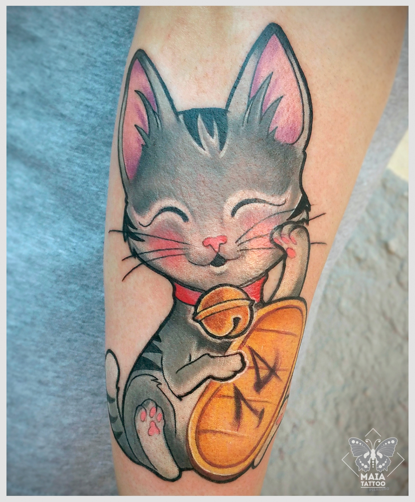
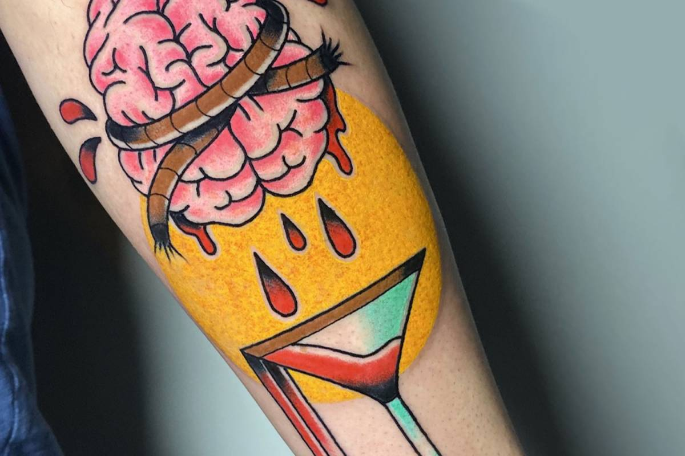
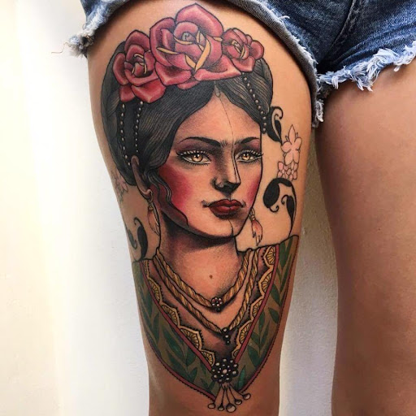
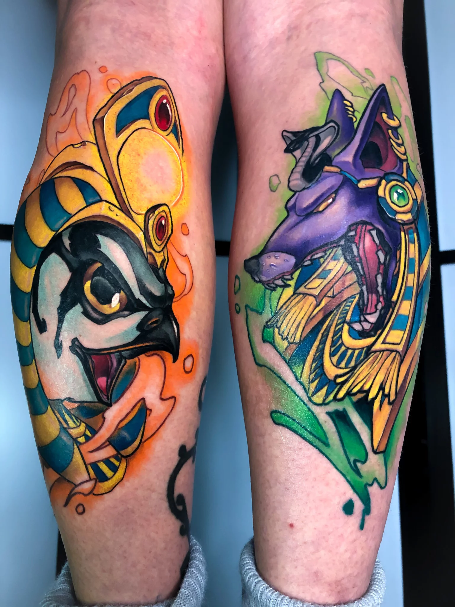
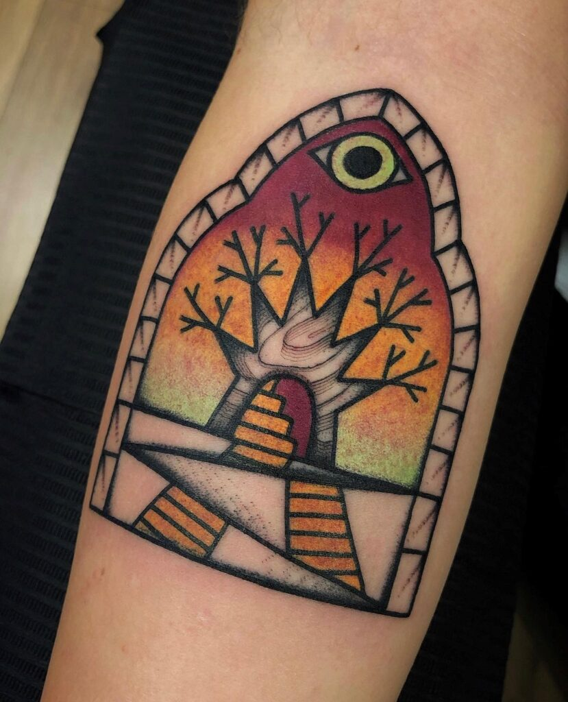

New School
Stile
Il tatuaggio New school nasce invece dalla tradizione old school ma utilizza appieno le possibilità date dalle nuove macchinette. Con esse i tatuatori possono eseguire delle sfumature estremamente varie, possono creare dei contorni sottilissimi e immaginare delle figurazione molto complesse.
I tatuaggi New school sono quindi più definiti e anche più dettagliati, tanto che alcuni si stupiscono di vedere così chiaramente certi soggetti, quasi fossero stati “stampati” sulla pelle delle persone. I New school per molti versi somigliano agli old, ma si distinguono per una tendenza maggiore allo stile cartoon e ad una grafica maggiormente realistica.
Photogallery








